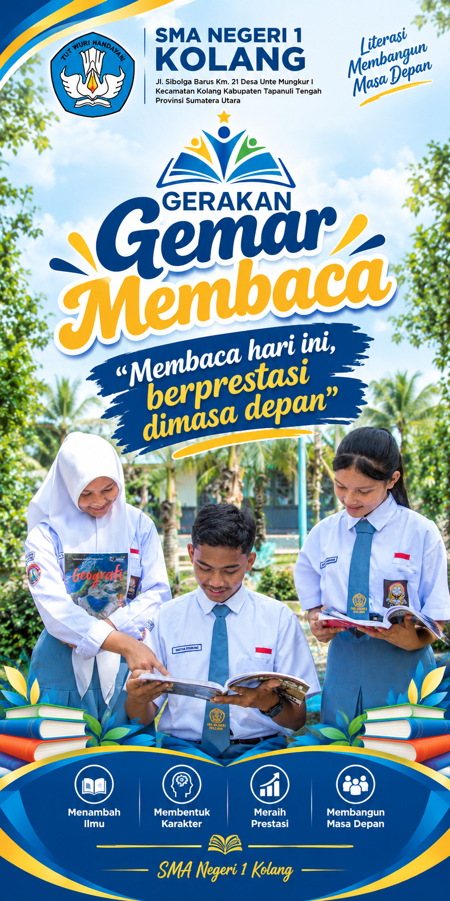

Membangun generasi yang berkarakter, berprestasi, berbudaya, mandiri, dan siap menghadapi masa depan.
Informasi umum mengenai identitas dan lingkungan pendidikan SMA Negeri 1 Kolang.

SMA Negeri 1 Kolang merupakan satuan pendidikan menengah atas yang berkomitmen memberikan layanan pendidikan yang berkualitas bagi peserta didik.
Sekolah mengembangkan potensi akademik dan nonakademik peserta didik melalui pembelajaran, kegiatan ekstrakurikuler, penguatan karakter, literasi, teknologi, serta berbagai kegiatan pengembangan diri.
Website ini menjadi salah satu media informasi sekolah untuk menyampaikan profil, program, kegiatan, fasilitas, dan berbagai aktivitas SMA Negeri 1 Kolang kepada masyarakat.
SMA Negeri 1 Kolang
Sekolah Menengah Atas
Sekolah Negeri
Kolang, Sumatera Utara

Puji syukur kita panjatkan kepada Tuhan Yang Maha Esa. Selamat datang di website SMA Negeri 1 Kolang.
Website sekolah ini diharapkan menjadi sarana informasi dan komunikasi antara sekolah, peserta didik, orang tua, alumni, serta masyarakat.
Kami berkomitmen untuk terus meningkatkan kualitas pembelajaran, penguatan karakter, prestasi peserta didik, pemanfaatan teknologi, serta menciptakan lingkungan sekolah yang aman, nyaman, bersih, dan menyenangkan.
Semoga website ini memberikan manfaat dan menjadi bagian dari upaya kita bersama dalam memajukan pendidikan.
“ Terwujudnya Lulusan yang Berkarakter, Bernalar Kritis, Kreatif, Mandiri, Kolaboratif, Sehat, dan Peduli Lingkungan.”
Berbagai program untuk mendukung perkembangan akademik, karakter, kreativitas, dan keterampilan peserta didik.
Penguatan budaya membaca, menulis, dan kemampuan memahami informasi untuk meningkatkan kualitas belajar.
Pengenalan teknologi, pemrograman, dan kecerdasan artifisial sebagai bagian dari kesiapan menghadapi masa depan.
Membentuk peserta didik yang disiplin, bertanggung jawab, santun, mandiri, dan memiliki kepedulian sosial.
Membangun lingkungan sekolah yang bersih, hijau, sehat, asri, dan peduli terhadap lingkungan.
Mendukung peserta didik untuk mengembangkan potensi akademik maupun nonakademik dan meraih prestasi.
Menyediakan ruang bagi peserta didik untuk mengembangkan minat, bakat, kreativitas, kepemimpinan, dan kerja sama.
Dokumentasi beberapa kegiatan peserta didik dan warga SMA Negeri 1 Kolang.

Pembiasaan budaya Senyum, Salam, Sapa, Sopan, dan Santun di lingkungan sekolah.

Membangun interaksi positif dan budaya sekolah yang ramah serta berkarakter.

Melatih kedisiplinan, kekompakan, tanggung jawab, dan kepemimpinan peserta didik.

Pengembangan bakat seni dan musikalitas melalui kegiatan paduan suara.

Kegiatan pembinaan kedisiplinan dan kerja sama peserta didik.

Aktivitas pembinaan karakter melalui kegiatan bersama.
Fasilitas yang mendukung proses pembelajaran dan kegiatan peserta didik.
Ruang pembelajaran untuk mendukung kegiatan belajar mengajar.
Sarana pengembangan budaya membaca dan sumber belajar.
Mendukung pembelajaran berbasis praktik dan eksperimen.
Digunakan untuk olahraga dan berbagai kegiatan sekolah.
Dokumentasi kegiatan dan aktivitas warga sekolah. Klik foto untuk memperbesar.


Jl. Sibolga Barus Km. 21 Desa Unte Mungkur I Kecamatan Kolang Kabupaten Tapanuli Tengah Provinsi Sumatera Utara Kode Pos 22562
sman1kolang123@gmail.com
(0631)